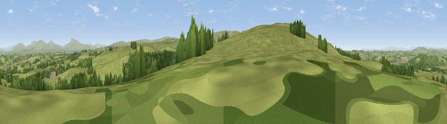

Viewpoint near Wray
#9111 in England · top 28% of its area beats it · near WrayWhere it is
The exact computed spot (SD 60350 66050). Click the marker for map links.
The view, rendered

A 360° render of this exact spot computed from the terrain model, tree cover and land cover — summer colours, afternoon light, calibrated against photographs of famous viewpoints. Real trees, hedges and buildings will differ in detail.
The panorama
Grey silhouette: terrain skyline in each direction (720 bearings, Earth curvature and refraction included). Dashed green: skyline with trees (+15 m) and buildings (+8 m) as obstacles. Blue strip: how far the ground is visible on each bearing.
Where the view opens
Wedge length = distance to the farthest visible ground on that bearing (vegetation-aware). Rings at 10, 25 and 50 km.
What fills the view
65% grassland · 34% woodland · 1% cropland
Angular shares of the visible panorama (visual magnitude), not map area. Landscape diversity 0.31 (0–1 Shannon).
Key numbers
More beautiful places nearby
The staircase of upgrades: each row has a higher view potential than everything closer. Driving times are estimates from straight-line distance, calibrated against real road routing — check an actual route before setting out.
| Place | Direction | Drive | Score |
|---|---|---|---|
| Viewpoint near Wray | WSW · 2 km | ~4 min | 72.0 |
| Viewpoint near Wray | SW · 2 km | ~5 min | 73.8 |
| Viewpoint c9201_7202 | S · 6 km | ~13 min | 76.1 |
| Viewpoint c9170_7172 | SSW · 8 km | ~16 min | 77.0 |
| Viewpoint near Quernmore | SW · 9 km | ~17 min | 77.7 |
| Viewpoint near Quernmore | SW · 9 km | ~17 min | 78.0 |
| Warton Crag | WNW · 13 km | ~24 min | 83.2 |
| Viewpoint near Grange-over-Sands | WNW · 24 km | ~39 min | 83.4 |
54.08882, -2.60766 · source: screening · position refined by local search. Computed location — check access rights before visiting.